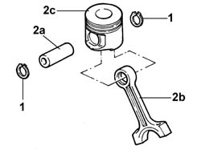
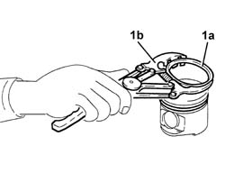
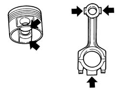
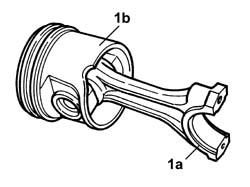

1028H60 PISTON, PIN SET - REPLACE
- Path
- Procedures > 10 ENGINE UNIT > 1028 PISTONS AND CONNECTING RODS > 1028H PISTONS AND CONNECTING RODS > 1028H60 PISTON, PIN SET - REPLACE
- Kind
- repair procedure (removal / refitting; the operation number is the code)
- Applies to
- engines: 2.3 JTD 16V, 2.8 JTD 8V; all production periods
- Interactive page
- https://sloeber94.github.io/elrnDB-fDct/en/#/244000689
Applies to: engines: 2.3 JTD 16V; all production periods
 Removing
Removing
 Refitting
RefittingSee in Op. 1028H54
Applies to: engines: 2.3 JTD 16V; all production periods
Refitting
Removing- Clean any carbon residues from the piston crown.
- Check that the weight of the pistons corresponds to the recommended values.
 | Subject | Value |
|---|---|---|
. | PISTON SET | g |
- | Weight of the pistons | 705 ± 5 |
- Check the alignment of the connecting rods using suitable equipment; if it is not correct, replace the connecting rod.
- Check that the weight difference between the connecting rods, complete with half-bearings, caps and bolts corresponds to the recommended figures.
| Subject | Value |
|---|---|---|
. | CONNECTING ROD ASSEMBLY | g |
- | Weight difference between connecting rods | ± 15 |
See in Op. 1028H54
Applies to: engines: 2.8 JTD 8V; all production periods
Removing
Refitting1. Remove the piston rings.
2. Release the pin (2a) and separate the connecting rods (2b) from the pistons (2c).

Applies to: engines: 2.8 JTD 8V; all production periods
1. Remove the bands (1a) from the pistons using a suitable tool (1b).

Applies to: engines: 2.8 JTD 8V; all production periods
Refitting
Removing- Check the alignment of the connecting rods using suitable equipment; if it is not correct, replace the connecting rod.
- Check that the weight difference between the pistons corresponds to the recommended figures.
| Subject | Value |
|---|---|---|
. | Engine piston set | g |
- | Weight difference between pistons | +- 5 |
- Check that the weight difference between the connecting rods, complete with half-bearings, caps and bolts corresponds to the recommended figures.
| Subject | Value |
|---|---|---|
. | Engine connecting rod assemblies | g |
- | Weight difference between connecting rods | 2,5 |

Applies to: engines: 2.8 JTD 8V; all production periods
- Fit the circlips on the pistons using a suitable tool.
1. Join the connecting rods with the pistons so that the number stamped on the big end (1a) is facing opposite the reference (1b) on the piston.
- Fit the pins and secure them using the circlips.
